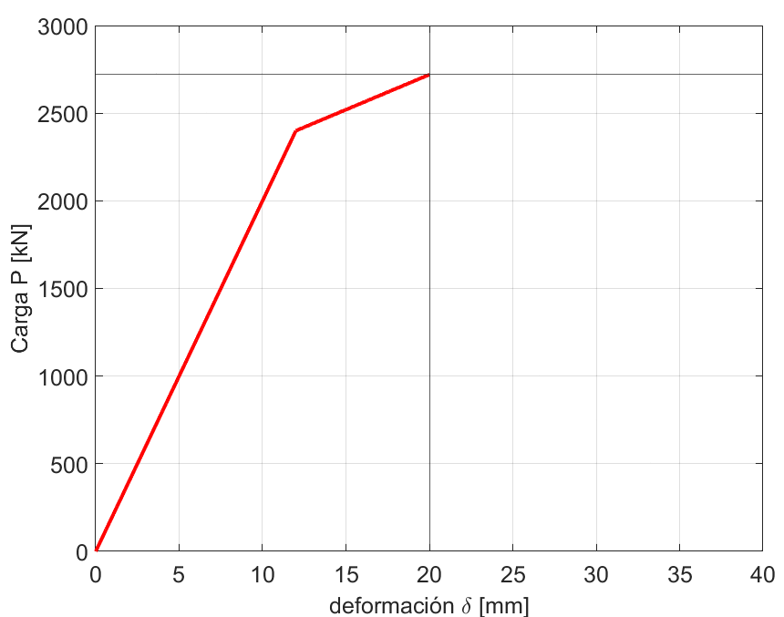
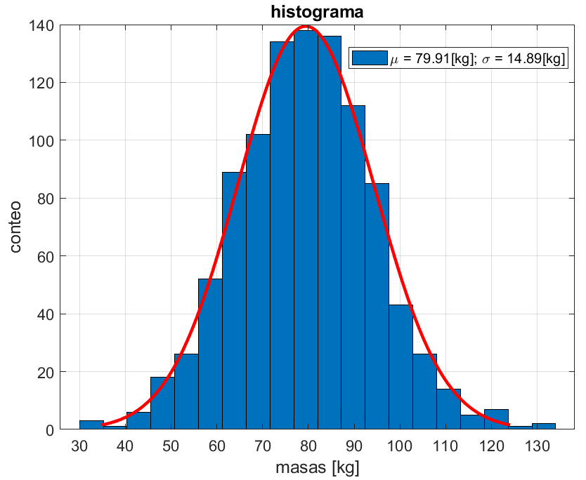

MATLAB (MATrix LABoratory) es un entorno y lenguaje de programación. Su ventaja es su capacidad para
realizar operaciones de arreglos multidimensionales como vectores (\(n \times 1\)), matrices (\(n \times m\)), etc. de manera rápida y sencilla.
MATLAB tiene documentación para todas sus funciones. Dentro del mismo entorno se puede consultar cómo utilizar una función escribiendo help nombre_función en la ventana de comandos o consultando su página web, la cual contiene ejemplos:
Las variables se utilizan para almacenar datos. Hay diversas estructuras de datos para almacenarlos, como escalares, vectores, matrices, también, cadenas de texto (string), celdas (cells), estructuras (struct) a las que se les asignan letras o variables:
Un arreglo es un escalar, vector, o un tensor multidimensional, con dimensiones \(p \times q \times r \times s \times ...\)
Ej: Crear las siguientes variables: \(a = 1\), \(b = \begin {bmatrix} 1 \\ 2 \\ 3 \end {bmatrix} \) y \(c = \begin {bmatrix} 1 & 2 & 3 \\ 4 & 5 & 6 \\ 7 & 8 & 9 \end {bmatrix} \)
Los comentarios van con signo de porcentaje %. Para no mostrar la asignación de la variable en la ventana de comandos, escribir el símbolo ; al final de la asignación.
Es una buena practica primero inicializar un vector/matriz vacío (llenos de ceros o unos) ya que MATLAB primero asigna un espacio en la memoria, por lo que si se desea añadir un nuevo elemento al arreglo, se tendría que reasignar el espacio en la memoria todas las veces que se modifica.
Ej: Vector de tiempos para una simulación:
Para observar qué contiene un arreglo (vector o matriz) en una posición específica:
matriz(i, j) para ver el elemento en fila i, columna j
matriz(i, :) para ver la fila i (todas las columnas), vector fila
matriz(:, j) para ver columna j (todas las filas), vector columna
matriz(:, :) toda la matriz
matriz(i:e, j:k) para ver matriz entre las filas i y e y las columnas j y k
vector(j: end) para ver elemetos en vector desde la fila j en adelante.
arreglo(i, j, k) para ver la matriz k en la fila i columna j (se puede ver como un vector de matrices)
Si se desea trabajar con expresiones algebraicas se pueden crear variables simbólicas. No es recomendable trabajar con variables simbólicas ya que MATLAB es ineficiente para trabajar con este tipo de variables:
Las series de caracteres se dividen en strings y chars, cada una tiene sus propias funciones para operar con ellas:
Para almacenar diferentes tipos de datos en una misma variable, se puede utilizar un struct (similar a diccionarios
en python):
Ej: Para 10 registros sísmicos, guardar los vectores de aceleración del registro, tiempo del registro, aceleración espectral, periodos de la aceleración espectral, duración del registro.
n_registros = 10; dataRegistros = struct() % inicializar un struct for i = 1:n_registros % para cada registro... [reg, t] = importReg(registro(i)); % Suponga tenemos función para importar registros % Guardar datos en struct dataRegistros(i).registro = reg; dataRegistros(i).tiempo = t; dataRegistros(i).Sa = computeSa(reg, t, T, xi); dataRegistros(i).duracion = max(t); % o t(end) end % Entonces, para consultar sobre el tiempo del tercer registro vector_tiempo_3er_registro = dataRegistro(3).tiempo;
Los structs organizan y estructuran datos de manera coherente en el código y se utilizan especialmente para simplificar las funciones al reducir la cantidad de inputs necesarios. En lugar de escribir múltiples inputs, se utiliza solo uno que luego se descompone dentro de la función.
Para saber que tipo de variable es una variable, comando class()
Las operaciones funcionan igual que las operaciones matriciales y vectoriales.
Sumar arreglos (matlab suma componentes (i,j) de cada arreglo)
Sumar elementos del arreglo
Restar (matlab resta componentes (i,j) de cada arreglo)
Multiplicar
Invertir matrices \(matriz^{-1}\)
Trasponer matrices \(matriz^T\)
Diferenciar e integrar
Suma acumulada
Además, MATLAB también incluye las funciones de operaciones matemáticas básicas
log() y exp() - Logaritmo natural y exponencial
sqrt() y ()x - Raíces y Potencias
sin() y cos() - Seno y coseno
\(x = A\setminus B\) - Solución de \(Ax = B\)
diag() - de vector a matriz diagonal o extraer diagonal de una matriz
Para crear una función por partes se utiliza la función piecewise().
MATLAB cuenta con la función eig() para resolver el problema de vectores y valores propios generalizado.
\(vectores\_propios\) es una matriz donde cada columna es un vector propio y \(valores\_propios\) es un vector donde cada elemento es un valor propio.
Valor esperado o media \(\mu \)
Desviación estandar \(\sigma \)
Varianza
Otros
Dependiendo de la distribución se pueden crear realizaciones de variables aleatorias:
Ej: 1000 realizaciones de distribución normal estándar \(X \sim N(0,1)\)
Ej: 1000 realizaciones de la masa de personas si \(M \sim N(79.91, 14.89)\)
Ej: Realizaciones de la siguiente medida de intensidad de registro sísmico: \(IM = Sa(T=1[sec], xi = 5\%)\), donde \(IM \sim lognormal(0.2, 0.57)\)
Los ciclos (loops) permiten repetir un mismo algoritmo. A pesar de que uno tienda a realizar todo con ciclos, operar vectores y matrices de forma inteligente es más eficiente.
El ciclo for sirve para repetir el mismo procedimiento un número determinado de veces.
Ej: Suponga que tenemos las matrices de la EDM en coordenadas modales \(Mn\), \(Cn\), \(Kn\), el vector con las frecuencias de vibrar de cada modo \(wn\). Obtener la fracción de amortiguamiento modal.
Repetir el mismo procedimiento hasta que se cumpla una condición.
Ej: Contar hasta 100 y mostrar números en pantalla
Ej: Encontrar carga última cuando se alcanza una deformación crítica de 20[cm] utilizando una carga monotónica y un modelo bilineal del material.
% Inputs delta_cr = 200;, delta_y = 50; % mm, deformaciones critica y fluencia deltas = (0:0.1:400).'; % mm, vector de deformaciones k1 = 200; % kN/mm rigidez primer tramo alfa = 0.2; % factor de reducción de rigidez para segundo tramo % Previo k = zeros(length(deltas), 1); k(deltas <= delta_y) = k1;, % tramo 1 modelo bilineal k(deltas > delta_y) = alfa*k1; % tramo 2 modelo bilineal P_y = k1*delta_y; % Carga de fluencia P = zeros(length(deltas),1);, i = 1;, delta_actual = 0; % Ciclo while while delta_actual <= delta_cr % Repetir siclo hasta cumplir condición k_actual = k(i); if delta_actual < delta_y % tramo 1 P_actual = k_actual*delta_actual; elseif delta_actual >= delta_y % tramo 2 P_actual = P_y + k_actual*(delta_actual - delta_y); end P(i) = P_actual; % guardar carga en vector i = i + 1; % para siguiente iteración delta_actual = deltas(i); % para siguiente iteración end P_simu = P(1:i); % cargas simuladas deltas_simu = deltas(1:i); % deformaciones simuladas P_cr = P_simu(end); % carga crítica
Una declaración condicional permite decidir si ejecutar un algoritmo o no si es que se cumple con una condición
(cuando booleano es True).
Ej: Verificar si una sección cumple con diseño a flexión
Ej: Calcular el factor de longitud efectiva de la zona de compresión del hormigón \(\beta _1\) de la norma ACI318, utilizando condicional ïf”:
Las funciones en MATLAB toman variables input, trabajan con ellas y retornan variables output. Las funciones son
fundamentales para organizar los scripts (para no escribir lo mismo muchas veces), lo que facilita su comprensión.
Las funciones se pueden crear ya sea en archivos .m separados del script general o escribiéndolas al
final del código. Si se crean en archivos, el nombre del archivo debe ser el mismo nombre de la función.
Ej: Crear una función para calcular \(Sa_{avg}\) de un registro sísmico (una medida de intensidad):
El archivo que contiene la función debe guardarse con el mismo nombre de la función, en este caso el nombre del
archivo debería ser computeSaAvg.m.
Luego, para llamar la función desde el script de matlab, se debe escribir el mismo nombre y los inputs.
% Suponga que ya se obtuvieron Sa y sus periodos respectivos T_vect de un registro sísmico T = 1; % s, Periodo de estudio dT = ; % s, Espaciamiento deseado para la interpolación de T_vect c1 = 0.2; % Para T_min para calcular Sa_avg c2 = 3; % para T_max para calcular Sa_avg % Llamar a la función y guardar resultado en una variable Sa_avg = computeSaAvg(Sa, T_vect, T, c1, c2, dT)
Matlab permite importar datos desde una gran variedad de archivos (.txt, .csv, .xlsx, ...). Dependiendo del formato en el que estén los datos en los archivos existen diversas funciones. Las más importantes son las siguientes:
readmatrix() - genera una matriz
readtable() - genera una tabla
load() - carga datos
Para exportar datos también existen funciones:
writematrix()
writetable()
Revisar la documentación de matlab para entender cómo utilizar las funciones.
Para graficar en matlab se ocupan series de datos como vectores o matrices:
Ej: Tomando los resultados del pushover de 4.2, graficar la curva de carga vs desplazamiento
% P_simu: vector de cargas simuladas % deltas_simu = vector de deformaciones simuladas figure % Crea una nueva ventana/figura plot(deltas_simu, P_simu,'linewidth',2,'color','r') hold on % para poner más que un gráfico en la figura xline(delta_cr) % Incluir línea vertical yline(P_cr) % Incluir linea horizontal hold off % para dejar de incluir graficos a la figura xlim([0 deltas(end)]) % limitar ancho de ventana grid on % encender grilla xlabel('deformación \delta [mm]') ylabel('Carga P [kN]')

En la figura, haciendo click en file ¿export setup, se puede configurar la vista de la figura para exportar.
También se pueden normalizar los histogramas y hacer ajustes a distribuciones
mu = 79.91; sigma = 14.89; cantidad_realizaciones = 1000; realizaciones_masas = normrnd(mu, sigma, cantidad_realizaciones, 1); % Histograma normalizado a pdf figure histogram(realizaciones_masas, 'normalization', 'pdf') % Histograma con ajuste de distribución figure histfit(realizaciones_masas, 20, 'normal')
El resultado de aplicar histfit() con las 1000 realizaciones (simulaciones) de la distribución normal.

Para instalar un toolbox, dentro de MATLAB ir a Home ¿Add-Ons ¿Get Add-Ons, lo que abrirá una pestaña para buscar e instalar toolbox.
Un toolbox necesario para el curso es el Control System. Instalarlo.
Muchos de los conceptos que se aprenden en cátedra, pueden realizarse en MATLAB con una función.
Para trabajar con sistemas en MATLAB, existen las Variables tipo sistema que pueden ser creadas con alguna de las
repreentaciones vistas en clases (y más).
Espacio-Estado (State-Space, SS)
Función de Transferencia (Transfer Function, TF)
Desde State-Space a Transfer Function y viceversa
Da exactamente el mismo sistema si se utiliza la representación state-space o transfer function.
Notar que la variable tipo sistema tiene toda la información del sistema. Para mostrarla se puede escribir \(sys\) en la ventana de comandos o \(disp(sys)\)
impulse(sys): aplicar impulso al sistema
ramp(sys): aplicar excitación de rampa al sistema
step(sys): aplicar excitación de escalón al sistema
Si se desea extraer la información del sistema que relaciona el output \(i\) con el input \(j\), se puede utilizar \(sys(i,j)\)
damp() - Polos, frecuencia, amortiguamiento
bode(), bodeplot() - Bode
rootlocus() - Root-locus
pzmap() - Mapa de polos y ceros
fft(), shiftfft() - Fast Fourier Transform
ode45() - Integración numérica Runge-Kutta Ode4
expm()
repmat()
Revisar la documentación de estas funciones